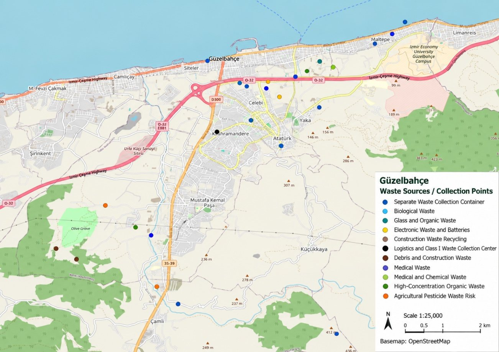
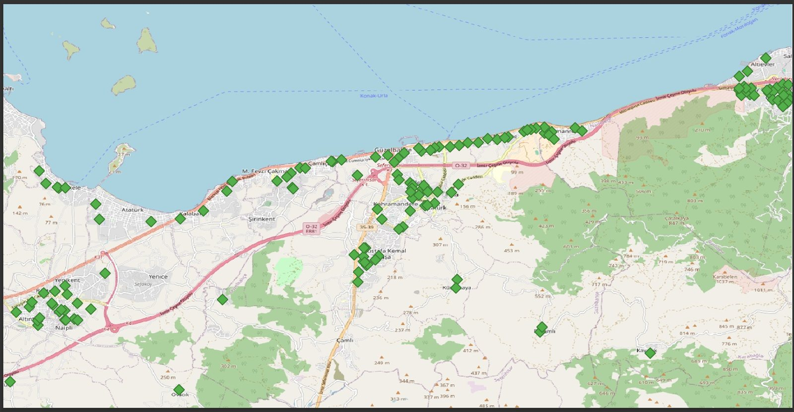

Kriz ve Dayanıklılık
Su, enerji, gıda, atık, iklim, biyoçeşitlilik, afet ve yangın: kırılganlıklar, birbirine bağlı sistemler ve dayanıklılık kapasitesi
Sistemler Arası Bağımlılık Ağı
Bir sistemdeki kesinti diğerlerine nasıl aktarılır? Bir sisteme tıklayın: etkilediği ve etkilendiği bağlantılar öne çıkar
İklim
Bitki örtüsü ilçeye görece serinlik kazandırıyor; ancak kıyı şeridi deniz seviyesi yükselmesine ve taşkına yüksek düzeyde maruz.
Ekolojik serinletme işlevlerini korurken kuraklığa, kamusal alanlardaki sıcaklığa ve kıyıdaki kesintilere hazırlanmak.
- Su: kuraklık ve yaz zirvesi; RCP8.5'te 2091–2100 için +3,9–5,3 °C
- Enerji: sıcak hava dalgası ve kuraklık üretimi ve iletimi etkileyebilir
- Gıda: kiraz ve zeytin dona ve sıcaklık dalgalanmalarına duyarlı
- Yangın: iklim değişikliği yangın riskini daha geniş alanlara yayıyor
- Ekosistem: doğal alanlar serin ada etkisi yaratıyor
Enerji
Elektrik arzı, ulaşım ve su pompalama birbirine bağlı; ilçe sınırında işletmedeki rüzgâr türbini yok, en yakın santral Urla'da.
Yerel enerji envanteri, çatıların güneş enerjisine uygunluk analizi ve kritik tesisler için yedek enerji değerlendirmesi.
- Su: kuyu ve pompa istasyonları elektriğe bağlı; kesinti su hizmetini etkiler
- İklim: sıcak hava dalgası ve kuraklık üretimi ve iletimi etkileyebilir
Su
Metropol şebekesine bağımlılık ve belirgin yaz zirvesi; havzadaki 42 yeraltı suyu kütlesinin 31'i kötü durumda.
Dere koridorlarını korumak, yeraltı suyu kullanımını izlemek, kaçınılabilir yaz talebini azaltmak ve ilçe su bütçesi hazırlamak.
- Gıda: sulama kuyu ve derelere bağlı; yazın su azalınca üreticiler ürün seçimini değiştiriyor
- Ekosistem: dere ağı iç yamaçları kıyıya bağlayan ekolojik koridor
- Enerji: kuyu ve pompa istasyonları elektriğe bağlı
- İklim: kuraklık ve yükselen sıcaklıklar
Gıda
Pazar tedariki büyük ölçüde hale bağlı; yerel üretim tarım arazisine, sulamaya ve bitki sağlığına bağımlı.
Üretken arazinin korunması ve geniş tedarik ağlarına güvenilir bağlantı; satın alınabilirlik, depolama ve tüketim verisinin güçlendirilmesi.
- Su: sulama suyu yazın azalıyor
- Ulaşım: İzmir–Çeşme Otoyolu ve Mithatpaşa Caddesi tedarik hatları
- İklim: don ve sıcaklık dalgalanmaları
Ulaşım
İzmir–Çeşme Otoyolu ve Mithatpaşa Caddesi gıda ve acil durum lojistiğinin ana arterleri; olası tıkanma noktaları var.
Alternatif tahliye ve itfaiye erişim güzergâhları; ikincil acil durum düğümleri.
- Gıda: tedarik hatları ve acil dağıtım
- Atık: atık Urla Aktarma İstasyonu üzerinden ilçe dışında bertaraf ediliyor
- Afet: deprem köprü, otoyol ve bağlantı yollarında hasar riski taşır
Afet
Kıyı yerleşim koridoru, dere geçişleri ve yamaç bağlantıları farklı tehlike bileşimleri oluşturuyor; kırsal cepler 500 m toplanma alanı erişiminin dışında kalabiliyor.
Tehlikelerin temel kent işlevlerini nerede kesebileceğini yerel ölçekte belirlemek; geçiş kuşaklarında ikincil acil durum düğümleri kurmak.
- Ulaşım: köprü, otoyol ve bağlantı yolu hasarı
Atık
Yerel toplama ile ilçe dışındaki aktarma ve bertaraf tesisleri birbirine bağımlı; organik ve hacimli atık ile atık ilaç henüz yönetilemiyor.
İzlenebilir atık akışları, güvenilir yedek varış noktaları ve kaynakta ayrıştırma.
- Ekosistem: hafriyat ve inşaat atığı sahaları ağır araç, toz ve gürültüyle tarım ve ekolojik alanlara baskı yapabilir
- Ulaşım: aktarma istasyonuna taşıma
Ekosistem
Orman, tarım, dere ve kıyı habitatları arasındaki bağlantılar parçalanma baskısı altında.
Yeni yapılaşmadan önce habitat sürekliliğini korumak; tür önceliklerini doğrulanmış yerel kayıtlarla belirlemek.
- İklim: bitki örtüsü serin ada etkisi yaratıyor
- Yangın: orman–yerleşim ara yüzü
- Su: dere koridorları
- Atık: hafriyat sahalarının baskısı
Yangın
Orman lekeleri ile yerleşimler arasındaki ara yüz; ilçede yüksek ve çok yüksek orman yangını riskli alanlar var.
Tahliye alternatifleri, itfaiye erişimi ve ekolojik işlevi koruyan bitki örtüsü yönetimi.
- Ekosistem: habitat sürekliliği
- İklim: sıcak ve kurak dönemler
Bağlantılar araştırma grubunun her sistem için yazdığı "Güzelbahçe sentezi" bölümlerinden ve rapordaki verilerden derlendi; nicel bir risk modeli değildir.
Su Kaynakları ve Su Güvenliği
Metropol şebekesine bağımlılık, yaz zirvesi, havzadaki yeraltı suyu baskısı ve iklim projeksiyonları
İçme Suyu ve Havza Durumu
İZSU (2024–2025), SYGM (2018). Havzadaki yüzey su kütlelerinin %38'i kötü, %9'u zayıf durumda; ilçenin tamamı Küçük Menderes Havzası'nda. Ayrıntı için Havza ve Koruma ve İZSU.
Havzada Sektörel Yeraltı Suyu Kullanımı, 2024
DSİ 2. Bölge Müdürlüğü (2025), hm³/yıl. Tarımın baskın payı havzayı kuraklığa karşı kırılgan kılıyor.
İklim Projeksiyonları, 2091–2100
Havza için üç modelin aralığı. Yağış değişiminin yönü modellere göre farklılaştığından tek bir kesin tahmin olarak sunulmadı.
Yaz Zirvesi
Su projeleri ve kısıtlar
Çamlı Barajı
Güzelbahçe ve Urla'da 300.000 kişiye yılda 21,5 milyon m³ içme suyu için tasarlandı; havzadaki Efemçukuru Altın Madeni'nin kirlilik riski nedeniyle uygulanamadı.
Gölet sulaması
Güzelbahçe gölet sulama projesi (95 ha net, 109 ha brüt) proje aşamasında; tarım özel kuyulara, artezyenlere ve derelere dayanıyor.
Yasal sınırlar
İzmir Körfezi alt havzasının kısıtlı bölümünde yeraltı suyu tahsisi ve derin kuyu yasak (Resmî Gazete, 5 Mayıs 2018). Yelki'de zeytinlikteki go-kart pisti onayı yargı kararıyla durduruldu.
İZSU 2023 tüketim verisi (38.044 kişi, yılda 3,06 milyon m³), TMMOB (2024), Yıldızgrup Planlama (2020).
Saha Görüşmeleri: Suyun Üretime Etkisi
Kuru tarım
- Yöntem
- Üzüm susuz; elma ve armut dereden borular ve depoyla damla sulama
- Gözlem
- Bazı üretim alanlarında sulama suyu yok
Ürün seçimi değişiyor
- Yöntem
- Dere yatağındaki kuyulardan elektrikli pompa
- Gözlem
- Yazın su seviyesi düşüyor; patlıcan ve biber ekilmiyor. En kurak aylar Haziran–Eylül.
Daha derin kuyular
- Yöntem
- Artezyen kuyu
- Gözlem
- Kuyular eskisinden daha derine açılmak zorunda
Damla sulama ve susuz bamya
- Yöntem
- Kuyu suyu, damla sulama; toprağı işlemeden yabani ot biçme
- Gözlem
- Kınalı bamya hiç sulanmadan yetişiyor
Araştırma grubunun Güzelbahçe pazarında ve Yelki'de yaptığı görüşmeler (29 Eylül ve 10 Ekim 2026). Kodlar katılımcıları anonimleştirir.
Enerji ve Emisyonlar
Güneş potansiyeli, bölgesel enerji altyapısı ve İzmir'in sera gazı envanteri
Aylık Güneş Işınımı (kWh/m²·gün)
Yatay yüzeye düşen günlük toplam ışınımın aylık ortalaması (EİE, GEPA). Güzelbahçe İzmir ortalamasına çok yakın; Haziran'da 6,54.
Dağıtık Üretim Potansiyeli
10 kWp örneği rapordaki hesaptır hesap. İlçe sınırında işletmedeki rüzgâr türbini yok; Urla RES'in lisans alanı Güzelbahçe sırtlarına uzanıyor. 154 kV iletim hatları güney sırtlardan geçiyor; 59,79 km'lik 380 kV Çeşme Havza–Uzundere hattı projesi ilçeyi kapsıyor. SECAP'e göre ilçedeki enerji tüketiminin %35–40'ı ulaşımdan.
İzmir Sera Gazı Envanteri, 2024 (tCO₂e)
Sanayi ve havacılık hariç; toplam 15.784.303 tCO₂e (İBB SECAP, 2025). Sanayi ve havacılık dahil toplam 24.227.118 tCO₂e.
İzmir'in İklim Nötr Yolu (tCO₂e)
2018'de kişi başına 3,51 tCO₂e. Hedef: 2030'a kadar %40 azaltım, 2050'de iklim nötr; 2050 emisyonunun yaklaşık %80'i azaltılıp kalan %20'si yutak ve dengeleme ile nötrlenecek.
Gıda Üretimi ve Tedarik Zinciri
Tarım deseni, bitki sağlığı, pazar tedariki ve kriz anında gıda lojistiği
Tarım Alanının Ürün Gruplarına Dağılımı (%)
İZKA (2021), TÜİK verisi. Meyvede mandalina başı çekiyor, ardından zeytin geliyor; tahıllarda sorgum, fiğ ve buğday, sebzede marul, domates ve salatalık öne çıkıyor.
Turunçgil Nematodu: Güzelbahçe Bahçeleri
Satsuma mandalina bahçelerinde 100 g topraktaki birey sayısı (Almas, 2013; Emre, 2014). Ortalama 880; yalnızca bir bahçe 1.600'lük ekonomik zarar eşiğini aşıyor. İzmir'deki 178 bahçede bulaşıklık %89,33, Güzelbahçe örneklerinde %100.
Çiftçi Kayıt Sistemi'ne Kayıtlı Çiftçi
İZKA (2021). İzmir ulusal sıralamada kiraz ve zeytinde 1., kestane, incir ve mandalinada 2. (TÜİK, 2024).
Mahallelerin İlçe Merkezine Uzaklığı (km)
Diğer sekiz mahalle merkezde. İlçe merkezinin İzmir il merkezine yol uzaklığı yaklaşık 28 km.
Pazar Tedarik Zinciri: İki Yol
Pazardan pazara
- Sıklık
- Haftada 7 gün; 2 gün Güzelbahçe, diğer günler Zeytinalanı, Gülbahçe ve Seferihisar
- Satılmayan
- Ertesi gün başka pazarda
Bozulabilir ürün kaybı
- Sıklık
- Haftada 4 gün
- Satılmayan
- Patates, soğan 1–2 gün daha; diğerleri atılıyor
Doğrudan satış
- Sıklık
- Haftada 1 gün
- Kaynak
- Kendi üretimi, Çamtepe
İşleyerek değerlendirme
- Sıklık
- Haftada 1 gün
- Satılmayan
- Salça, kurutma ya da komşularla paylaşma
Hane ölçeğinde koruma
- Sıklık
- Haftada 1 gün
- Satılmayan
- Kurutma ya da komşularla paylaşma
Beş tezgâhtan ikisi halden alıyor, üçü kendi ürününü satıyor. G1'e göre pazar esnafının yaklaşık %90'ı halden alıyor (katılımcı gözlemi). Pandemide de halden tedarik sürdü; olağanüstü durumlarda hal daha seyrek açılabiliyor. Yerel üreticiler dayanışmayla iki haftada bir perşembe 17.30–18.30 arasında doğrudan satış buluşması düzenliyor; belediye kış için Atatürk Kültür Merkezi altındaki kapalı pazar yerini tahsis etti.
Kriz Anında Gıda ve Barınma
Acil dağıtım merkezleri
Yalı ve Yelki kapalı pazar yerleri sahra mutfağı, Kızılay sıcak yemek noktası ve kuru gıda paketleme merkezine dönüştürülebilir.
Lojistik arterler
İzmir–Çeşme Otoyolu ve Mithatpaşa Caddesi ana tedarik hatları; tıkanma noktaları kritik.
| Geçici barınma alanı | Alan | Çadır / konteyner | Kişi |
|---|---|---|---|
| Güzelbahçe Spor Kulübü futbol sahası | 9.000 m² | 90 | 360 |
| Yelki Stadyumu | 8.000 m² | 80 | 320 |
İzmir AFAD (2025); araştırma grubunun kriz lojistiği değerlendirmesi.
Atık Sistemi ve İstenmeyen Arazi Kullanımları
Ayrı toplama, mahalle toplama günleri ve Yelki'deki hafriyat sahası · Toplama–aktarma–bertaraf zinciri için Katı Atık
Ayrı Toplanan Atıklar, 2025 (kg)
Güzelbahçe Belediyesi 2025 faaliyet raporu. Organik atık, yeniden kullanılamayan hacimli atık ve atık ilaç henüz yönetilemiyor; piller yılda iki kez TAP aracılığıyla geri dönüşüme gönderiliyor.
Yelki Çalıcası Hafriyat Sahası (ton)
İZBETON işletmesindeki Güzelbahçe–Yelki-2 hafriyat ve inşaat-yıkıntı atığı geri kazanım tesisi (TMMOB, 2024; İBB, 2025). Metropol ölçeğindeki çevresel yükün ilçeye dağılımı sorusunu gündeme getiriyor.
Bahçe Atığı ve Hacimli Eşya Toplama Günleri
Güzelbahçe Belediyesi, 10 mahallede uygulanan toplama günleri: bahçe atıkları, kullanılmayan ev eşyaları ve kaçak dökülen moloz için.

Araştırma grubu; altlık OpenStreetMap. Toplama noktaları kuzeydeki kentleşmiş alanda yoğunlaşıyor; güneyde daha dağınık kaynaklar ve tarımsal atık riskleri görülüyor.
İklim Krizi ve Biyoçeşitlilik
Yağış rejimi, iklim kırılganlık endeksi, İzmir'in iklim tehlikeleri ve gözlenen türler
Uzun Yıllar Aylık Yağış (mm)
İzmir Meteoroloji Bölge Müdürlüğü (2023). Yıllık toplam: Güzelbahçe 655,9 mm (7 yıllık gözlem), Konak 669,8, Bornova 605,1, Karşıyaka 501,1 mm. Temmuz–Ağustos neredeyse kurak.
İklim Değişikliği Kırılganlık Endeksi
İBB SECAP (2025); nüfus, taşkın yoğunluğu, orman yangını yoğunluğu ve NDVI'nin normalize değerlerinden. Güzelbahçe orta grupta; bileşenler aşağıdaki tabloda.
Endeksin Bileşenleri (normalize)
| İlçe | Nüfus | Taşkın | Orman yangını | NDVI | Endeks | Grup |
|---|---|---|---|---|---|---|
| Konak | 0,607 | 1,000 | 0,208 | 0,922 | 0,684 | Yüksek |
| Bornova | 0,854 | 0,512 | 0,313 | 0,429 | 0,527 | Yüksek |
| Karşıyaka | 0,645 | 0,348 | 0,357 | 0,602 | 0,488 | Yüksek |
| Seferihisar | 0,096 | 0,350 | 0,123 | 0,429 | 0,250 | Yüksek |
| Güzelbahçe | 0,052 | 0,043 | 0,110 | 0,210 | 0,104 | Orta |
Değerler ve gruplar kaynakta verildiği gibidir.
Serin Ada, Ama Açık Kıyı
Güzelbahçe, Narlıdere ve Balçova görece düşük yapılaşma ve geniş doğal bitki örtüsü sayesinde serin kalıyor; buna karşın Güzelbahçe kıyısı deniz seviyesi yükselmesi ve taşkına en çok maruz kesimler arasında (Cangüzel, 2022). Ağustos 2026 yağışı Ağustos 2025'e (7,9 mm) göre %60 daha az (MGM).
İzmir'de İklim Tehlikelerinin Risk Düzeyi
İzmir Büyükşehir Belediyesi (2025), il ölçeğinde değerlendirme; mahallelere doğrudan aktarılmamalıdır.
Güzelbahçe'de gözlenen türler
Kumru
Streptopelia decaoctoKarabaşlı ötleğen
Sylvia atricapillaKarabatak
Phalacrocorax carboMahmuzlu tosbağa
Testudo graecaAkdeniz geko
Hemidactylus turcicusErik kırlangıçkuyruğu
Iphiclides podaliriusKocayemiş
Arbutus unedoDağ lalesi
Anemone coronariaiNaturalist (2026) gözlemleri; Güzelbahçe–Küçükkaya yolu ve Olivelo/Yelki. Payamlı ve Küçükkaya, Kızıldağlar "kadim üretim havzası"nda: 500 m'nin üstünde bağlar, altında zeytinlikler yoğunlaşıyor (Doğa Derneği, 2022). İzmir genelinde 158'i endemik 1.938 bitki taksonu ve 23 familyadan 54 memeli türü kayıtlı.
Afet Riskleri ve Dayanıklılık Kapasitesi
İzmir'in tehlike profili, toplanma alanları ve sosyal kırılganlık · Fay hatları ve deprem için Doğal Yapı ve Afet
İzmir'de Afet Tehlikelerinin Dağılımı (%)
AFAD ve İzmir AFAD (2021). İzmir Fayı karada yaklaşık 40 km uzunlukta; Pınarbaşı'ndan Üçkuyular'a, oradan Balçova ve Narlıdere üzerinden Güzelbahçe'ye uzanıyor (Sözbilir, 2008).
Toplanma Alanları
İzmir AFAD; İZPA (2025). Kişi başı alan temel standartları karşılıyor; ancak kıyı ve topoğrafik geçişlerdeki kırsal ve yarı kırsal cepler 500 m yürüme erişiminin dışında kalıyor. Güçlü yer hareketi istasyonu (3516) Belediye Kapalı Spor Salonu'nda.

Araştırma grubu; Google Earth Pro, 1:50.000.
Sosyal Kırılganlık Faktör Endeksleri
Ortakavak (2019), İzmir ilçeleri. 1. faktör: eğitim, hizmet sınıfı, kırsal nüfus, okuryazar olmayan, dul, boşanmış ve engelli nüfus · 2. faktör: hane büyüklüğü, 15 yaş altı, 65 yaş üstü, mülteci · 3. faktör: nüfus yoğunluğu, işsiz ve kadın nüfus · 4. faktör: aile sağlığı merkezi sayısı. Endeksin yorumu kaynak çalışmaya aittir.
Kayıtlı Meteorolojik Olaylar
11 Şubat 2021 dolusu
Çeşme'de hortuma yol açan koşullar Urla ve Güzelbahçe dahil birçok ilçede yumurta büyüklüğünde doluya neden oldu.
1988–1994 kuraklığı
İzmir'de kaydedilen en uzun kuraklık dönemi; 3–5 yıllık kurak dönemler görülebiliyor.
18 Ağustos 2019
Sıcak hava dalgasında Karabağlar'da başlayan yangın günlerce sürdü; kentin kayıtlı en büyük orman yangınlarından.
Su erozyonu
İzmir'de su erozyonunun %63,15'i tarım arazilerinde, %24,01'i meralarda, %5,25'i ormanlarda.
İzmir 2. Bölge Meteoroloji Müdürlüğü (2024); Tarım ve Orman Bakanlığı, Çölleşme ve Erozyonla Mücadele Genel Müdürlüğü.
Orman Yangını ve Kentsel Yangın
Orman alanları güneyde ve doğuda, yerleşimler kuzeydeki kıyı bandında: ara yüz önceliklidir
Müdahale Edilen Kentsel Yangınlar, 2023
İzmir Büyükşehir Belediyesi İtfaiye Dairesi (2024); kaynaktaki karşılaştırma ilçeleri.
Orman–Yerleşim Ara Yüzü
İlçede yüksek ve çok yüksek orman yangını riskli alanlar bulunuyor (İBB ve İZKA yangın risk analizi). Yerel maruziyet; yapıların konumuna, bitki örtüsünün sürekliliğine, yol erişimine ve müdahale kapasitesine bağlı. Kentsel yangınlar orman yangını geçmişinden ayrı değerlendirilmeli, olası zincirleme kesintiler üzerinden ilişkilendirilmeli.
Dayanıklılık İçin Planlama Öncelikleri
Raporun sistem sentezlerinden: çevre koruma, altyapı sürekliliği, afet riskinin azaltılması ve mekânsal planlama birlikte ele alınmalı
İlçe su bütçesi
Kendi kendine yeterlilik ya da açık iddiasından önce su dengesi hesaplanmalı.
Kritik tesislerde yedek enerji
Pompa istasyonları ve acil durum tesisleri için kesinti senaryoları.
Üretken arazinin korunması
Tarımı güvenilir su varlığıyla uyumlu hâle getirmek.
İzlenebilir atık akışları
Yedek varış noktaları ve kaynakta ayrıştırma.
İkincil acil durum düğümleri
500 m erişimin dışındaki kırsal ve yarı kırsal ceplerde.
Tahliye ve itfaiye erişimi
Orman–yerleşim ara yüzünde alternatif güzergâhlar.
Ekolojik serinletme
Yeşil alanların ve dere koridorlarının sürekliliği.
Katılım ve şeffaflık
İstenmeyen arazi kullanımlarında doğrulanmış etki kanıtı ve etkilenen toplulukların katılımı.
Veri Kaynağı: Araştırma grubunun "Crises, Vulnerabilities, Disasters and Resilience" raporu (Kasım 2026) · İZSU · DSİ 2. Bölge Müdürlüğü · SYGM Küçük Menderes Havza Yönetim ve Kuraklık Yönetim Planları · EİE GEPA · İBB SECAP (2025) · İZKA (2021) · TÜİK · Almas (2013), Emre (2014) · İzmir AFAD (2021, 2025) · İZPA (2025) · Güzelbahçe Belediyesi 2025 faaliyet raporu · TMMOB ÇMO İzmir Şubesi (2019, 2024) · Çevre, Şehircilik ve İklim Değişikliği Bakanlığı · MGM · Cangüzel (2022) · Ortakavak (2019) · İBB İtfaiye Dairesi (2024) · iNaturalist · Doğa Derneği (2022) · Saha görüşmeleri (Eylül–Ekim 2026)